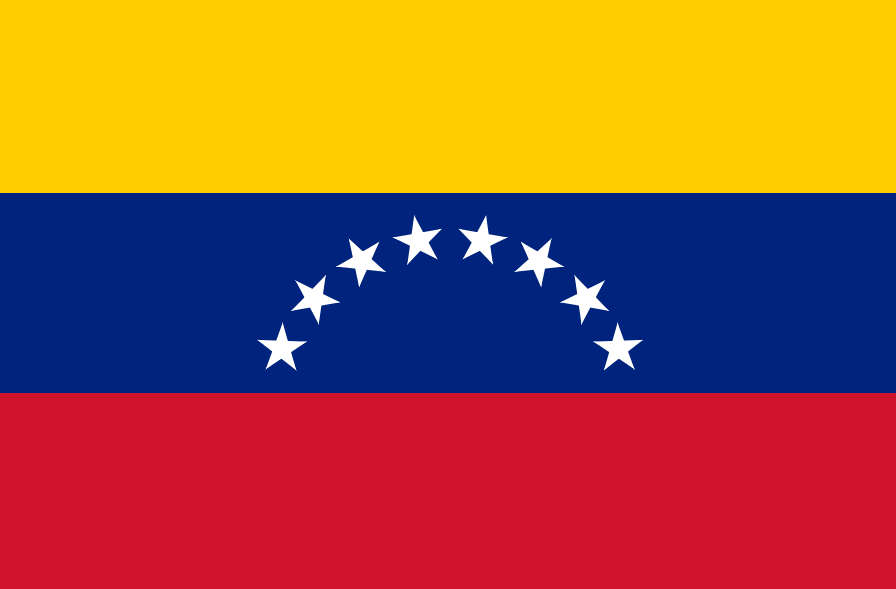

☁ About Me ☁
My name is Lievelyn. I was born in Caracas, Venezuela, and I have lived here my whole life. Currently, I don't have a job, but I'm looking to find one as soon as possible. I love spending time with my loved ones. I enjoy music and anything related to computers, like graphic design or programming. I also love learning new languages, and I'm interested in learning French.
☁ Caracas, Venezuela ☁
Caracas (/kəˈrækəs, -ˈrɑːk-/ kə-RA(H)K-əs, Spanish: [kaˈɾakas]), officially Santiago de León de Caracas (CCS), is the capital and largest city of Venezuela, and the center of the Metropolitan Region of Caracas (or Greater Caracas). Caracas is located along the Guaire River in the northern part of the country, within the Caracas Valley of the Venezuelan coastal mountain range (Cordillera de la Costa). The valley is close to the Caribbean Sea, separated from the coast by a steep 2,200-meter-high (7,200 ft) mountain range, Cerro El Ávila; to the south there are more hills and mountains. The Metropolitan Region of Caracas has an estimated population of almost 5 million inhabitants. "Caracas" (2024)
Since 2006:

Official Flag of Venezuela
☁ Resources ☁
Resources I've used for this document!
🤍Wikipedia (Caracas)🤍Wikipedia (Flag)
🤍Churchofjesuschrist (Scriptures)